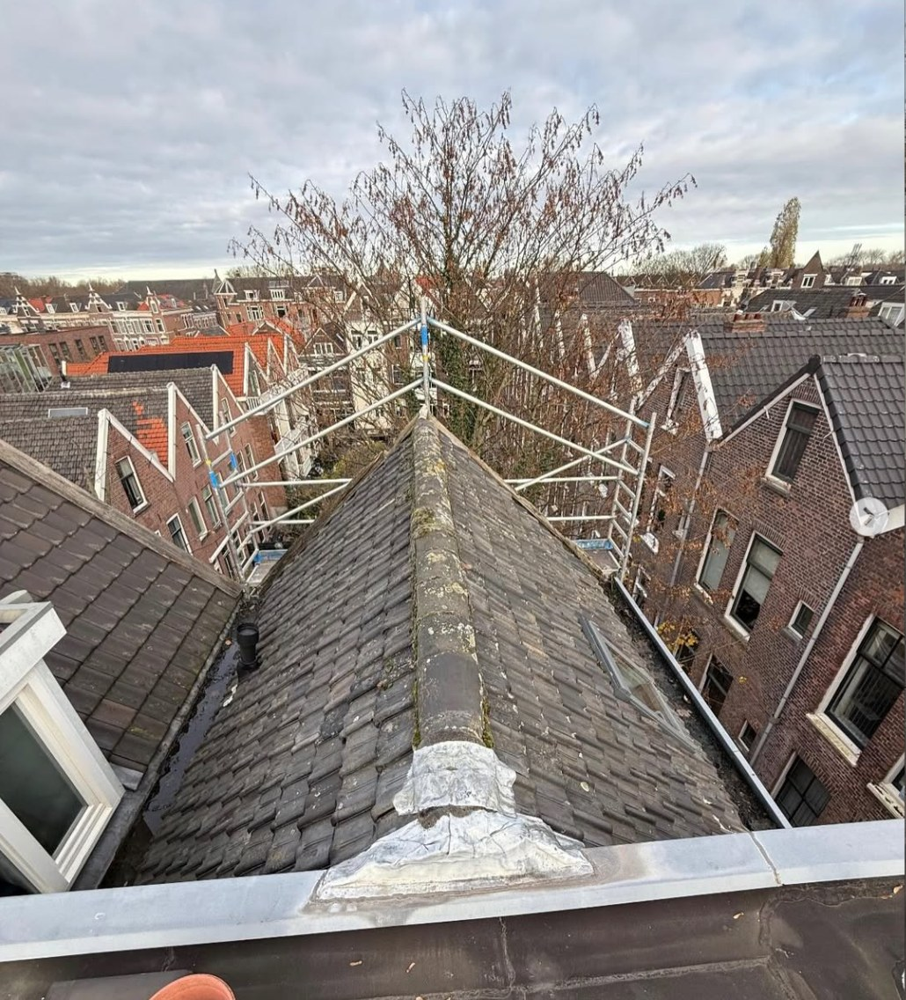

Kwaliteit begint met de juiste vakmensen en de beste materialen. Daarom werken wij uitsluitend met gerenommeerde A-merken — en staan wij voor onze kwaliteit met 10 jaar garantie.
Wij werken uitsluitend met hoogwaardige A-merk materialen en ervaren, gecertificeerde vakmensen — voor resultaat dat jarenlang meegaat.
10 jaar garantie op zowel onze werkzaamheden als de gebruikte materialen. Wij staan voor ons werk, ook nadat de ladder is opgeruimd.
Duidelijke en eerlijke offertes, geen verrassingen achteraf. U weet vooraf precies waar u aan toe bent.
Wij denken mee vanaf de tekentafel en leveren een dak op dat klaar is voor de toekomst.
Van complete vervanging tot gerichte renovatie — altijd met oog voor de bestaande situatie.
Met een onderhoudscontract en gratis dakinspectie houden wij uw dak in topconditie.

In december 2025 voerden wij de complete dakrenovatie uit van dit karakteristieke herenhuis in Rotterdam Kralingen. Het bestaande dak werd volledig verwijderd tot op het dakbeschot en opnieuw opgebouwd met hoogwaardige materialen. Ook de zinken wangen en het loodwerk rondom de dakkapel aan de straatzijde zijn volledig vernieuwd, zodat alle aansluitingen weer duurzaam en waterdicht zijn. Het resultaat: een kwalitatief hoogwaardig dak dat jarenlang bescherming biedt — met, zoals altijd, 10 jaar garantie op zowel het werk als de gebruikte materialen.
Zo bent u verzekerd van een duurzame oplossing waar u jarenlang op kunt vertrouwen — op zowel materialen als werkzaamheden geven wij 10 jaar garantie.